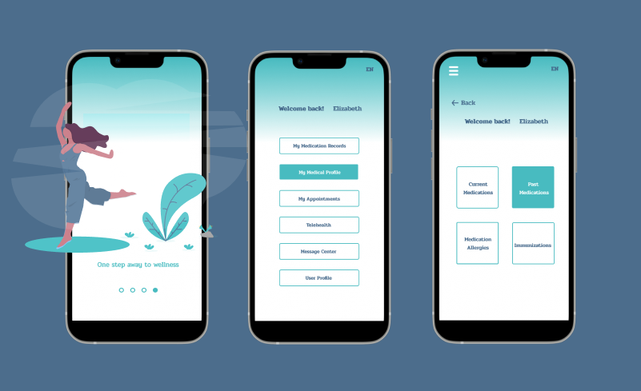
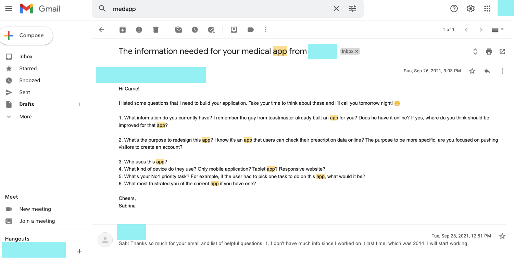

Background
Get your medicine records, Lab results, Doctor appointments with one tap.
Carrie is a pharmacist and a teacher who advocates wellness and healthy living. Being a pharmacist for more than 10 years, she handled so many patients by preparing and dispensing prescriptions to them. She always cares about her patients. She wants to build an app that helps users to check their medication and medical record anytime, anywhere.
Problem
The original design of the Med app was designed a long time ago, both the functions and visual design are bit outdated. The founder asks me to redesign the app.
Objectives
- Conduct market research and offer more app feature options.
- Design a mobile app interface going through the main features.
- Develop an app that can sync with doctors and health professionals for consultation and feedback, while tracking and engaging individuals with their health.
The Old Design
To assure my perspective matches the objectives, I asked Carrie about the purpose to redesign this app. Who are the target audiences? What is the priority task of the app? etc.

Goals
* Could we democratize medical information, especially making patients' medication lists portable?
* How can we create a possible way for patients to track their own medical progress, instead of only relying on physicians and others?
* How might we create a more comfortable and delightful experience for something that usually causes worry for the patients.
Marketplace Research
Has Mobile Health Technologies grown? Most Americans Want to Share and Access More Digital Health Data
In 2020, the U.S. Core Data for Interoperability (USCDI) finalized a rule requiring that EHRs make that data available to patients and health care organizations using APIs; the rule will take effect in December 2022. Since then patients will get easier to see their medical records.
PEW(The Pew Charitable Trusts) conducted a survey to 1,213 Americans(ages 18+) of what information do patients want to share and access, the top five data patients like to know could be the opportunities of ME mobile app.
Who are our competitors? Are there any gaps in the market?
There are thousands of Health-related apps online, including Fitness Tracking, Meditation courses, Medication reminder, Sleep tracking. etc. I narrowed it down with apps that only focus on tracking your medication or medical record, and I got three popular ones. HEALOW, MYCHART, FOLLOWMYHEALTH.
User Interview
Let Users to decide the two core components of the app
Carrie asked some of her patients the challenges they faced when meeting a doctor or tracking their health records. Based on the feedback, we determined two components required in the ME app. "Schedule appointment" and "Check Medication and Medical Record on mobile".
Define
I presented the market research with other team members, combined with Carrie's User Interview, I created a User Flow for the two core functionalities before designing the wireframe.

Design

Wireframe
Present and Reframe the Features
We held another meeting, started by me presenting the wireframe and Po Han suggesting whether those features can develop within a shot of time. After discussed with Carrie and the team, We decide to keep these features and move others.
- Check Current/Past Medication
- View Lab Results, Vital Signs, Procedures
- View Scheduled Appointments
- Telehealth
- Message communication with Doctor
Prototype
Brand, Color and Typography
After I created a moodboard and a few sketches of the brand, I went with a logo that alluded to what the app serves to do yet still remains friendly and professional. I went for some clean and wellness color.
High-Fidelity Prototype

Test
Low Color Contrast Will Confuse Some Users, Accessible Design Improves Access to All Users.
When I was testing the prototype with some friends and our team, Some people found the color of the app's background and text do not have strong contrast. I used Contrast Check and decided to change the colors.
Next Steps & Prototype
After changing the main color, I met with our team. We settled on the design and our team Engineer will start to develop the app. During the implementation, I will keep meeting up with the team and iterate the design with Users' Feedback.